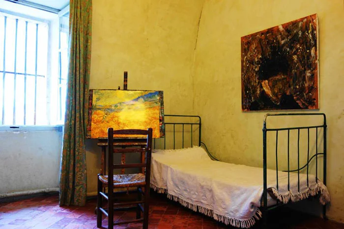

arrow_backChambre n°5 du monastere Saint-Paul-de-Mausole. Une piece simple, blanchie a la chaux — un lit de fer, une table, une chaise. Et une fenetre a barreaux qui donnait sur les champs d'oliviers et de bles des Alpilles.
C'est en regardant par cette fenetre, une nuit de juin 1889, que Vincent van Gogh peignit La Nuit etoilee — le tableau le plus reproduit et le plus reconnu au monde, aujourd'hui au MoMA de New York.
La chambre est aujourd'hui reconstituee a l'identique avec le mobilier de l'epoque. En regardant par la meme fenetre, on voit le meme paysage que Van Gogh regardait il y a 135 ans — les collines des Alpilles, les cypres, l'horizon de pierre blanche.